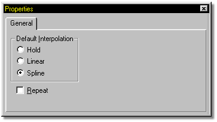
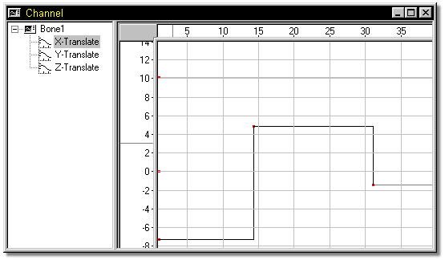
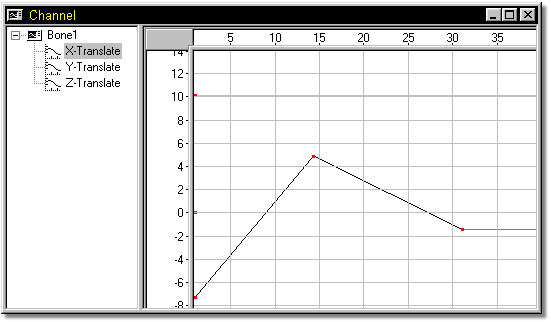
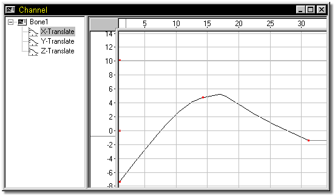

There are several different types of interpolation that can be used from control point to control point in the channel editing window. When a channel item is selected, the Properties Panel reflects these options.
The Hold interpolation method holds the value of the channel editing window from one control point to the next.

The Linear interpolation method simply draws straight splines from control point to control point.

Spline interpolation is the default, and draws smooth, curved splines through each control point.

Tell Me About:
Channel Attributes
Adding Channels
Removing Channels
Channel Frame
Channel Value
Channel Gamma
Channel Magnitude
Channel Rulers
Channel Bound Group
Other Group Commands